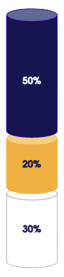
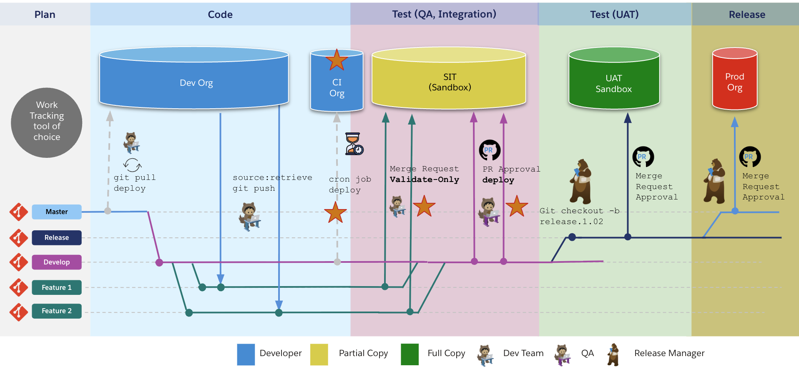

Agentforce
Testing & Deployment
The hour, and how we spend it
Agenda · 60 minutes
- The Agent Development Lifecycle (ADLC)
- Why testing & deployment carry the most risk
- The Use-Case reference scenario
- Why agentic testing is different
- Six layers of agent testing
- The testing toolbox & tools
- Designing effective test coverage
- An agent is linked metadata
- Git, SFDX & package.xml
- Validate → deploy → publish → activate
- Pipelines & release governance
- Knowledge check
- Resources
- Questions
Overview
The agent development lifecycle
Testing and deployment are two phases in a continuous loop — select a phase.
The scenario: Sports Booking Concierge
A modern, multi-turn conversational assistant for discovering sporting events and answering venue-related queries.
Behind the scenes
The real flow for the current agent turn — intent → routing → action → data → response.
Press Play next turn to replay a real Riyadh conversation.
Testing & deployment are where trust is won or lost
Why these two phases carry the most risk — and the most value
- An agent reasons its own path through subagents and actions — so "it worked when I tried it" proves very little.
- Actions write real CRM data. A wrong tool call is a data incident, not a UI bug.
- Customers see the output directly. One hallucinated policy can end up on social media.
- An agent is a bundle of linked metadata plus Apex, flows, prompt templates, permissions and data.
- Missing one dependency fails the deploy — or worse, deploys an agent that silently can't act.
- Versions, activation and rollback must be scripted so any FDE can repeat them at 2am.
Our team rule: No agent reaches a customer-facing channel without a passing test suite and a deployment that was rehearsed in a full sandbox.
Agentforce Testing
Testing goals and expectations
Test observable behaviour and outcomes, not identical generated sentences.
Why Testing Matters in Agentic AI
When agents are customer-facing, every response shapes brand trust.
Traditional testing doesn't work for
non-deterministic agents
- Same input → same output
- Test once, trust forever
- End-of-cycle validation works
- Stable regression baselines

- Same input → variable outputs
- Behavior drifts as models evolve
- Late testing = late surprises
- Requires continuous validation

An agent is probabilistic. "It worked when I tried it"
proves almost nothing.
Ask the concierge “When is the Desert Lions match?” five times and compare two kinds of test.
Apex test
Fixed input, fixed output
Agent test
Free-form input, varied wording
Six layers of agent testing
Cheap and deterministic first, rich and realistic last — each layer catches what the one below misses. Select a layer.
Agentforce Toolbox
Manual exploration
Your fastest feedback loop — and your weakest memory
- Agent Builder Preview & sf agent preview
- Prompts, instructions, topics & actions
- Expected vs. actual behaviour
Demo 1 — Preview & trace
LIVE DEMOSimulated agent, runs in this pageSend a message to see which topic and action the agent chose.
Batch / bulk testing
Agentforce Testing Center — one suite, hundreds of utterances, a scored grid
- Lives as a tab in Agentforce Studio
- Each case asserts expected subagent, actions & outcome
- Scorers: accuracy, completeness, coherence, conciseness, latency, instruction adherence
- Run history compares quality across agent versions
bash# tests as code — the FDE workflow sf agent generate test-spec sf agent test create --spec tests/sports-concierge.yaml sf agent test run --api-name Service_Agent_Tests \ --wait 15 --result-format json
Demo 2 — Run a CSV suite
LIVE DEMOSimulated Testing CenterAF Conversational Testing (ACT)
Use ACT for multi-turn evaluation as an internal practice tool.
- Personas with background, goal and style
- Scenarios with context and custom variables
- Autopilot generates multi-turn user responses
- Playlists scale agent × persona × scenario runs
- Deterministic field checks and model-based criteria
- Responsible AI, business rules and conversational goals
- Conversation transcript plus before/after state snapshots
- Captured Salesforce record changes roll back after chat
When to use ACT vs. alternatives
UI & Channel testing w/ Playwright
Testing Center checks the brain — Playwright checks what the customer sees
- Enhanced Chat on Experience Cloud / the React site
- Real user journeys & multi-turn interactions
- Rendered responses, rich content, handoff
- Session & conversation continuity
- Plugs into automated regression pipelines
journey.spec.tstest('full end-to-end concierge journey', async ({ page }) => { await page.goto(process.env.SITE_URL) await page.getByRole('button', { name: /chat/i }).click() const chat = page.frameLocator('iframe') await chat.getByRole('textbox').fill( 'What sporting events are on in Riyadh?') // loose on wording await expect(chat.getByText(/Al-Noor Arena/i)) .toBeVisible({ timeout: 30000 }) // strict on UI await expect(page).toHaveScreenshot() })
▶️ Playwright
RECORDED RESULTS- ✓ Full end-to-end concierge journey (recorded) 10.7s
▶ The complete multi-turn flow — greeting → discovery → preferences → event cards → venue citation — captured by the journey.spec.ts run.
Automated testing w/ Python & YAML
Same idea as the CSV suite — but run by a process on every change
- A YAML file lists questions & expected results
- A Python script sends each to the agent and prints PASS / FAIL
- Assert on topic, action & key facts — not exact wording
- Run locally, then in CI smoke (every PR) and full (nightly)
bash# tests as code — the FDE workflow sf agent generate test-spec sf agent test create --spec tests/sports-concierge.yaml sf agent test run --api-name Service_Agent_Tests \ --wait 15 --result-format json
Demo 3 — Headless YAML runner
LIVE DEMOSimulated runner · edit the YAMLDesigning effective tests
Building effective agent test scenarios
Design each test across four dimensions — select one to explore
Q&A · Testing
Four-question knowledge check
Agentforce Deployment
An agent is a bundle of linked metadata
Move it all together — miss one dependency and the agent lands broken
| Metadata type | What it represents |
|---|---|
| AiAuthoringBundle | The draft agent as an Agent Script .agent file (new Agentforce Builder) — human-readable, easy to review in PRs. |
| AiAgentDefinition | Agent-level definition — its type, description, context variables and other agent-wide settings (runtime, created on commit). |
| AiAgentDefinitionVersion | Version-specific configuration — the planner, subagents and actions. Committed versions are immutable; one is active. |
| GenAiPromptTemplate | Prompt templates used by actions. |
| AiEvaluationDefinition | Testing Center test suites — the gate ships with the agent. |
| Dependencies | ApexClass, Flow, custom objects & fields, permission sets, and Data Library / Data Cloud assets. |
Where your metadata lives
Metadata moves through a chain of environments — select each stop
package.xml — the manifest that says what moves
- A manifest lists metadata types & members to retrieve or deploy.
- Use exact member names as retrieved — don't guess version suffixes.
- Generate a starter with sf project generate manifest --from-org.
- Use the Agent pseudo-type to retrieve/deploy an agent and its parts in one go.
- Keep one manifest per release and commit it with the change.
manifest/package.xml
Salesforce CLI: retrieve, validate, deploy
Step through a full cycle — authorize → retrieve → validate → deploy
Deployment Tooling
Be fluent enough to plug the agent into whatever exists, and never skip the Data 360 path.
Deployment options, from clicks to pipelines
Same CLI underneath; the difference is who runs it and how it's governed
The enterprise CI/CD pathway
How Git branches map to orgs and approval gates across Plan → Code → Test → UAT → Release

Version the complete release
Your release run sheet — package everything deployable; defer manual work unless it's a prerequisite
- Only dependencies required before deployment
- Feature, licence and connection readiness
- External or Data 360 prerequisites
- Exact clicks, values, owner and evidence
- Automate where possible; define the stop check
- Agent and supporting metadata
- Apex, Flows, prompts and tests
- Permissions, schema and configuration
- Environment-safe defaults
- One reviewed source version
- Default home for remaining manual steps
- Target configuration and authorization
- Publish, activate and channel setup
- Validation, PVT and evidence capture
- Exact clicks or automated command, plus recovery
Data 360 — what Data Kits move
Data Kits move definitions, not operational readiness — plan the state as a separate path
- Some dependencies need extra sequencing, target setup or verification.
- Package and automate them wherever possible.
- Data streams, DLOs and stream bundles
- DMOs, mappings and relationships
- Transforms and calculated insights
- Identity rules, data graphs and segments (where supported)
- Search index and retriever definitions (where supported)
Q&A · Deployment